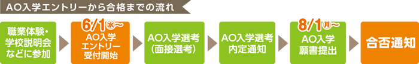
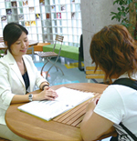

-
新高校3年生のためのAO入学制度まるわかり特別説明会
-
学費・奨学金についても併せて説明いたします。
学力試験だけでは評価することのできない志望者の人柄や熱意を、学校側の求める人物像（アドミッションポリシー）と照らし合わせて、総合的に評価する入学方法です。いち早く進路を決めたい方にオススメです！！
【こんな方へオススメ！】
●エントリーシートの書き方が不安
●作文にどんな事を書けばいいのか分からない
●そもそもAO入学制度がよく分からない…など
保護者の方もぜひご参加ください。
-
 
5/3(火・祝),14(土),
15(日)
受付開始12：15～

|
-
一般入学説明会
- 入学方法や学費の事など、何でもお気軽にご相談下さい！！
予約制となっておりますので、お越しになる前に、下記までご連絡をお願い致します。
毎日開催！！
ご希望の方はお電話またはメールにてご連絡ください。
電話：0120-141-807
E-mail：info@osaka-eco.ac.jp
|
-
学費サポート個別相談会
- 
- 様々な学費サポートについて、個別にご説明いたします。保護様のみのご参加でもOKです。
●奨学金制度
●教育ローン
●分納・延納制度
ご希望の方はお電話またはメールにてご連絡ください。
電話：0120-141-807
E-mail：info@osaka-eco.ac.jp
|
-
今からでも遅くありません！あなたの「好き」を職業に！
大学生・社会人の為の個別進路相談
- やっぱり夢があきらめられない、動物・自然・環境分野に興味がある、
そんなあなたはぜひ一度ご来校下さい。
学費、就職、入学方法など、詳しくご説明致します。
この機会に気になることは全て解消して下さい。
-
平日限定！夕方の時間もOK!
受付10：00～19：00
ご希望の方はお電話またはメールにてご連絡ください。
電話：0120-141-807
E-mail：info@osaka-eco.ac.jp
- 学費相談
社会人・大学生・短大生の方にとって、進学にかかる費用は最も心配される部分です。本校では、様々な学費納入プランをパターン化ではなく一人ひとりの状況に合わせてご相談に乗っています。
また、認可校として日本学生支援機構の奨学金や様々な教育ローン、本校だけの特別金利の銀行ローンなどのサポートも充実しています。
一般入学
大学生・短大生・高校を卒業した社会人の方対象。
動物・自然・環境分野の仕事がしたいという思いを持ち続けていた方のために現役のプロ講師陣、パワフルな産学協同教育、充実した就職サポートで、業界を目指します。
入学に際しては目標シートの記入と面接選考があります。
|
-
高校3年生・社会人のための
ウィークDayオープンキャンパス
-
平日 月～金 16:00～18:30
あなたのスケジュールに合わせてご予約下さい。
昼間の時間もご対応させて頂きます。
お電話にて一度ご相談ください。
ご希望の方は0120-141-807までご連絡ください。
|